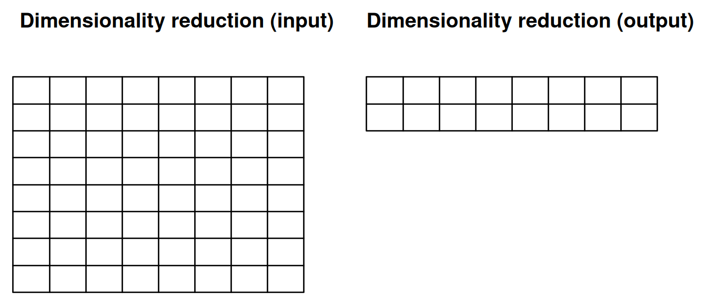
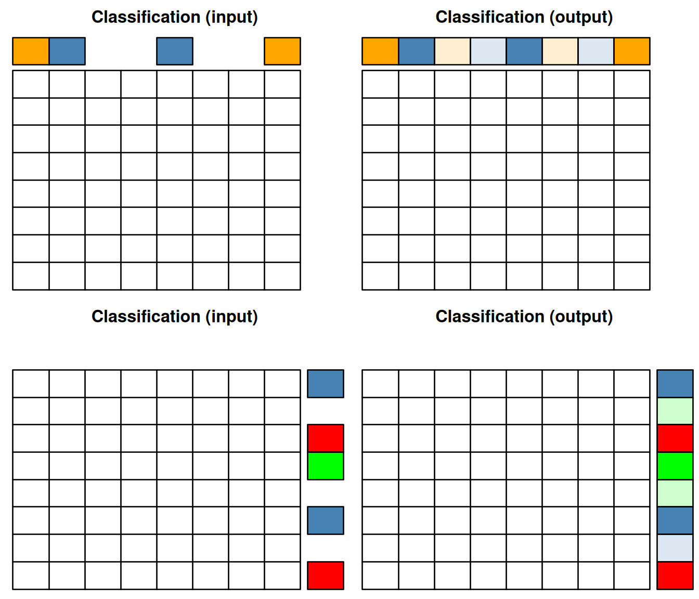

Chapter 12 Conclusions
In this course, we have consolidated our skills in data analysis and visualisation using R. In particular, this course has focused on interpretation and understanding of the outputs.
We have also learned and applied new tools, in particular how to
manipulate sequence data using Biostrings and how to use statistical
learning tools to explore data and identify patterns of biological
interest. In terms of statistical testing and machine learning, it can
be useful to summarise the different classes of techniques we have
touch on using the figures below. The grid on each of these figures
represents a matrix with quantitative values with features (genes,
proteins, transcripts, …) along the rows and samples along the
columns. Annotations of features or samples are presented as coloured
boxes on the right or top if the matrices.
In hypothesis test, we start with quantitative data and an experimental design, i.e. sample annotation that group samples in biologically relevant groups. The output of hypothesis testing is a set of metrics for each features (a p-value, an adjusted p-value, a fold-change, …) that informs whether that feature shows any difference between the biological groups of interest.
Figure 12.1: Hypothesis testing.

When performing clustering (unsupervised machine learning), we only have our quantitative data as input, and the clustering algorithm (whether k-means, hierarchical clustering among many others) suggests a set of groups to cluster the features (as shown below) or samples.
Figure 12.2: Clustering of features.

When performing dimensionality reduction with, for example PCA, one starts with a n by m data set as input to reduce the number of dimensions in either direction. On the figure below, the number of features n was reduced to 2 to, typically, visualise the sample along a scatter plot.
Figure 12.3: Dimensionality reduction.
In classification (supervised machine learning), we need labelled data, i.e. a set of sample (top on the figures below) or features (bottom on the figure below). The classifier uses the data to learn from assigned labels and applies that learnt model to infer the most likely label of the unlabelled data.
Figure 12.4: Classification of samples (top) or features (bottom).
The next steps of the curriculum (course WSBIM2122) will build upon the skills gained in this course to fully analyse complete datasets from omics technologies, using state-of-the-art statistical and machine learning methods and software. The course will be project based: each experiment and associated technologies will be introduced, the analysis pipeline will be explained, and the students will then implement and present the data analysis and critical interpretation of the results.
12.1 Additional exercise
These final exercises integrate several techniques seen throughout this course.
Exercise 1
► Question
The the RNA-Seq data and sample annotation in the files returned by
the rWSBIM1207::kem2.tsv() function. How many genes have been
assayed? Describe the experimental design at hand.
► Question
Print and describe the experimental design.
► Question
Before performing log-transformation of the data, check if there are
any 0-expression values. Indeed, these would be converted to -Inf
after log-transformation. Are there any 0-values in the data. If so,
how many are there.
► Question
Add 1 to all expression values, then log-2 transform the expression data. Visualise the distributions of the expression values in each samples before and after transformation.
Continue with log-transformed data, without preforming any normalisation.
► Question
Compute, for each gene, the number of 0-expression values and visualise these as a table showing the number of genes with 0, 1, 2, … zero values.
► Question
Visualise and interpret the experiment design (cell type and treatment) using a principal component analyis.
► Question
Use a t test to identify the genes that are differentially expressed between the stimulated and non-stimulated samples of cell type A. Visualise the results on a volcano plot.
► Question
Considering that a gene is called differentially expressed if it has an absolute log2 fold-change > 1 and an adjusted p-value < 0.001, how many differentially genes are there?
► Question
Visualise the expression of these differentially expressed genes in all sampes using a heatmap and interpret the figure.
► Question
Select the 3 genes with the smallest p-values and visualise their expression in all samples (cell types A and B, both stimulated and un-stimulated) using boxplots.
► Question
Perform a k-means clustering of all genes and samples using k = 5 and visualise these clusters on a PCA plot. Interprete the figure.
► Question
Repeat the volcano plot above, colouring the genes based on their respective clusters. Refine your interpretation of the gene-level PCA above.
Exercise 2
► Question
Load the recapSE1 data available in the rWSBIM1322 package
(version >= 0.3.1) with data(recapSE1). The data contains
quantitative proteomics data. You are asked to:
- Familiarise yourself with the experimental design.
- Verify if the data need to be transformed and or normalised.
- Perform an principal component analyse and interpret it.
- Identify differentially abundant proteins for each condition
compared to the reference group
CTRL. - Are there any significantly up- or down-regulated proteins shared between all treatments?
Exercise 3
► Question
Load the recapSE2 data available in the rWSBIM1322 package
(version >= 0.3.2) with data(recapSE2). The data contains
quantitative proteomics data. You are asked to:
- Familiarise yourself with the experimental design.
- Verify if the data need to be transformed and or normalised.
- Perform an principal component analyse and interpret it.
- Identify differentially abundant proteins for each condition
compared to the reference group
CTRL. - Repeat the analyses above after removing the outlier. What is the effect of that outlier of the differential analysis.
Page built: 2024-12-09 using R version 4.4.1 (2024-06-14)